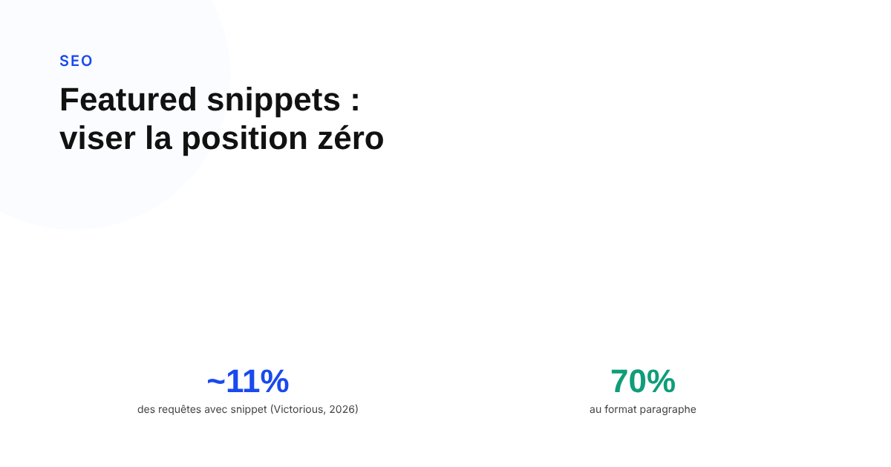
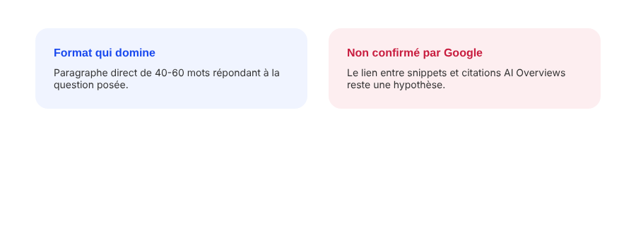

Featured snippets : comment apparaître en position zéro en 2026
La position zéro fascine autant qu'elle est mal comprise : rare, concentrée sur un format précis, et réservée aux pages qui sont déjà bien classées. Voici ce qui est établi, et ce qui n'est qu'une heuristique de vendeur SEO non confirmée.

« Position zéro » est devenu un argument de vente dans beaucoup de propositions commerciales SEO. En pratique, c'est un format d'affichage que Google réserve à une minorité de requêtes, construit à partir de pages qui sont déjà bien classées — pas un objectif qu'on atteint par une astuce de mise en forme indépendamment du reste. Comprendre ce qui est réellement démontrable évite de promettre un résultat qui dépend surtout du classement organique en amont.
Ce qu'est réellement un featured snippet
Le featured snippet est un extrait de contenu que Google met en avant au-dessus des résultats organiques classiques, généralement avec un lien vers la page source. Il n'existe pas de documentation officielle Google détaillant une méthode pas à pas pour l'obtenir : Google confirme son existence et son principe général, sans publier de spécification de format. Ce qu'on sait avec certitude, documenté par plusieurs observations indépendantes de la recherche organique, c'est qu'une page doit déjà figurer en première page sur la requête pour être éligible — le snippet est tiré de ce pool restreint, pas de n'importe quelle page du web.
Un format minoritaire, concentré sur un seul type
Un rapport trimestriel publié par Victorious sur le premier trimestre 2026 a mesuré qu'environ 11 % des recherches Google affichaient un featured snippet, et que parmi ces cas, le format paragraphe représentait environ 70 % des snippets observés — loin devant les listes et les tableaux. C'est une mesure d'un seul observateur sur une période donnée, pas une statistique officielle de Google, mais elle donne un ordre de grandeur utile : la position zéro reste l'exception, pas la norme, et se concentre sur un format de réponse directe plutôt que sur les listes à puces souvent citées en exemple.

Les heuristiques de longueur, à prendre pour ce qu'elles sont
De nombreux guides SEO recommandent une fourchette précise — souvent 40 à 60 mots pour un snippet de type paragraphe, 3 à 8 éléments pour une liste. Ces chiffres reviennent dans suffisamment de sources indépendantes pour ne pas être de simples inventions, mais ils restent des heuristiques construites par observation de snippets existants, jamais une spécification publiée par Google. Les traiter comme une règle à respecter au mot près serait une erreur : le vrai critère est une réponse directe et autonome à la question posée, formulée clairement dès les premières phrases qui suivent le titre.
Ce qui reste à démontrer
L'idée qu'optimiser pour les featured snippets aide aussi à apparaître dans les AI Overviews de Google circule beaucoup dans la littérature SEO 2026, sur la logique qu'un contenu structuré et répondant directement à une question sert les deux formats. C'est une hypothèse raisonnable, mais aucune étude indépendante consultée ne mesure un lien causal direct entre les deux — seulement une plausibilité partagée par construction. La prudence est de la présenter comme un raisonnement, pas comme un fait établi, en attendant une mesure plus rigoureuse.
Comment travailler dessus sans se tromper de priorité
Avant de retravailler un format pour viser un snippet, la première vérification est simple : la page cible-t-elle déjà la première page sur la requête visée ? Si non, le travail de forme est prématuré, et l'effort doit aller sur le fond du contenu et son autorité thématique. Si oui, répondre à la question dès les premières lignes, dans une structure claire adaptée au type de réponse attendu (définition, liste d'étapes, comparatif), reste la méthode la plus cohérente avec ce que les observations disponibles indiquent — sans attendre un résultat garanti.
FAQ
Faut-il être en première page de Google pour obtenir un featured snippet ?
Oui, c'est la condition la plus solidement établie : Google sélectionne le featured snippet parmi les pages déjà classées en première page sur la requête. Travailler le format d'une page qui ne figure même pas en première page ne produira pas de snippet.
Existe-t-il un nombre de mots optimal pour un featured snippet ?
Non, pas de règle officielle. Des fourchettes comme 40 à 60 mots pour un snippet de type paragraphe circulent largement dans les guides SEO, mais ce sont des heuristiques issues de l'observation de cas existants, pas une spécification technique publiée par Google.
Optimiser pour les featured snippets aide-t-il aussi pour les AI Overviews ?
C'est l'hypothèse avancée par plusieurs praticiens SEO, qui notent que les deux formats favorisent un contenu clair, bien structuré et qui répond directement à la question posée. Aucune étude indépendante ne confirme un lien causal direct entre les deux, mais la logique de rédaction qui aide l'un ne nuit pas à l'autre.
Envie d'un contenu structuré pour viser la position zéro sans sacrifier le fond ?
Pour aller plus loin, voir la page SEO, et l'article Zero-click searches : pourquoi aucun chiffre unique ne dit la vérité.
Pour continuer sur ce sujet.